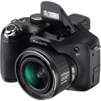
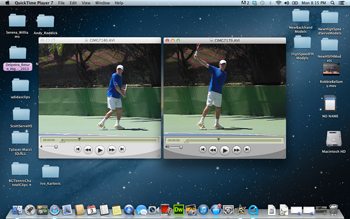

← Bài trước: A New Teaching System - Introduction | 🏠 Teaching Systems Trang chủ | Bài tiếp: → A New Teaching System - Doing Your Own Side by Side Analysis
Hệ thống huấn luyện mới: Phân tích video tốc độ cao: Rẻ tiền và đơn giản?
Thư viện kiến thức quần vợt toàn diện — Cơ bản, Phân tích kỹ thuật, Thư viện tham khảo và nhiều hơn nữa
Hệ thống huấn luyện mới:Phân tích video tốc độ cao:Rẻ tiền và đơn giản?
John Yandell
Một tệp video tốc độ cao - loại mà bạn có thể tự tạo cho mình.
Bạn có nghĩ phân tích video tốc độ cao là một quá trình kỳ lạ, đắt tiền mà bạn (chỉ) muốn áp dụng vào trận đấu của mình? Hay thậm chí là so sánh cú đánh của mình với kỹ thuật của các tay vợt chuyên nghiệp?
Để làm được điều đó, bạn cần những máy quay và phần mềm phân tích đắt tiền, phức tạp? Đúng không?
Câu trả lời là không. Thậm chí ngược lại. Những tiến bộ kinh ngạc liên tục trong công nghệ đã làm cho điều này trở nên dễ dàng và kinh ngạc đến mức rẻ tiền.
Trong bài viết này, tôi sẽ giải thích những gì bạn cần để tự quay video tốc độ cao. Sau đó, trong bài viết tiếp theo, chúng ta sẽ nói về cách so sánh mình với các tay vợt hàng đầu và đánh giá các vị trí quan trọng trong các cú đánh của mình.
Chi phí? Tất cả những gì bạn cần là một laptop cộng với một trong những máy quay tốc độ cao thế hệ mới, với giá khoảng $300. Vâng, $300.
Để so sánh bên cạnh nhau, bạn sẽ cần thêm $30 phần mềm nâng cấp từ Apple cho Quick Time Pro. (Bạn đã có Quick Time thông thường nếu bạn có thể xem Stroke Archive.)
John McEnroe đã sử dụng phân tích video - và những đoạn phim của chính mình như một mẫu - để khôi phục lại động tác giao bóng của mình.
Và, đương nhiên, bạn cần đăng ký quan trọng của mình với Tennisplayer để tải xuống các đoạn clip mô hình chuyên nghiệp. Cùng với khả năng theo dõi một vài bước đơn giản và thực hiện một vài cú nhấp chuột đơn giản. Và một điều nữa: sự sẵn sàng và ham học hỏi để cải thiện mạnh mẽ các cú đánh của mình.
Và có, bạn có thể chi tiêu hàng nghìn đô la nếu muốn. Bạn có thể có những máy quay đắt tiền, phức tạp. Bạn có thể có những phần mềm phân tích đắt tiền, phức tạp.
Nhiều chương trình phân tích có sẵn có những khả năng mà một số tay vợt hoặc huấn luyện viên muốn - công cụ vẽ, khả năng thêm giọng nói, đo góc đơn giản, v.v., v.v.
Nhưng tôi không bao giờ sử dụng chúng. Theo quan điểm của tôi, chúng là không cần thiết. Thường thì chúng là quá nhiều mà làm phân tâm khỏi trải nghiệm học tập trực quan cốt lõi.
Phân tích video và học tập thể thao
Giá trị của phân tích video trong thể thao đã được thiết lập rõ ràng. Nó được sử dụng rộng rãi trong hầu hết các môn thể thao chuyên nghiệp và là một phần quan trọng trong việc giảng dạy golf ở tất cả các cấp độ. Nhưng không phải ở quần vợt.
Điều này khiến tôi ngạc nhiên, vì không có nơi nào hiệu quả hơn trong môn thể thao của chúng ta, nơi có nhiều cú đánh cơ bản và số lượng biến thể có thể xảy ra gần như vô hạn. Tất cả đều yêu cầu độ chính xác kỹ thuật tuyệt vời.
Một phản hồi phổ biến: "Tôi không biết mình thực sự đang làm gì!"
Trong công việc huấn luyện của mình, tôi đã thấy phép thuật của video với các tay vợt trẻ, tay vợt đại học, và tay vợt tour, bao gồm cả các tay vợt như Justine Henin, Taylor Dent và John McEnroe. (Nhấp vào đây để đọc câu chuyện về công việc của tôi với Mac.) Tôi cũng đã thấy cách nó có thể thay đổi trò chơi của các tay vợt câu lạc bộ ở mọi lứa tuổi và năng lực, ngay cả những tay vợt có những vấn đề nghiêm trọng, kéo dài lâu.
Tại sao? Vì sự thành thạo trong quần vợt và tất cả các môn thể thao là một vấn đề về học tập trực quan và động học. Tâm trí cần hình thành hình ảnh về các cú đánh. Cơ thể cần cảm nhận các động tác dựa trên những hình ảnh này.
Người chơi cũng cần thấy những gì anh ta thực sự đang làm - và cách gần như anh ta thực sự là với các vị trí kỹ thuật mà anh ta đang cố gắng làm chủ.
Tất cả điều này cần được tích hợp ở cấp độ dưới ngôn ngữ. Đó là cách nó trở nên tự động. Bạn không thể nói bạn cách thực hiện một cú thuận tay trên điểm quyết định. Nhưng bạn có thể hình dung bạn cách sử dụng hình ảnh tích cực.
Không may, thông tin trong các bài giảng quần vợt truyền thống đến từ một phương tiện khác - dưới dạng một loạt liên tục các lời khuyên bằng lời nói. Các tay vợt chuyên nghiệp đưa bóng và các lời khuyên bằng lời nói. Lại và lại, giờ sau giờ học. Một lượng lớn nỗ lực và ý định tốt đã được thực hiện ở cả hai bên mạng, nhưng đôi khi trò chơi của các tay vợt trông giống hệt nhau sau nhiều năm.
(Để đọc bài viết của tôi về thần thoại của lời khuyên quần vợt, hãy nhấp vào đây.)
Video đưa trải nghiệm vào một chiều mới. Trăm lần tôi đã nghe các tay vợt nói điều gì đó như "Ồ, đó là những gì tôi thực sự đang làm? Wow! Tôi không biết gì cả." Mặc dù một huấn luyện viên chuyên nghiệp có thể đã mô tả chính xác cùng một vấn đề với họ trong nhiều năm.
Máy quay
Quá trình quay video tốc độ cao đầu tiên mà chúng tôi từng làm là thực sự quay phim - phim chạy qua các máy quay với tốc độ lên đến 240 khung hình mỗi giây. Đây là một video hướng dẫn với John McEnroe và Ivan Lendl. Kiểm tra các video âm nhạc là trái tim của dự án đó. (Nhấp vào đây.)
Một trong những máy quay tốc độ cao Casio kinh ngạc cho phép bất kỳ ai cũng có thể quay quần vợt của mình ở tốc độ cao.
Trong hai ngày quay phim, chúng tôi đã tiêu tốn khoảng $75.000 phim 35mm, không kể chi phí của các máy quay và đoàn làm phim. Mười một năm sau, tôi đang ở buổi khai mạc Sân vận động Arthur Ashe tại Giải quần vợt Mỹ Mở rộng với hệ thống video tốc độ cao đầu tiên có khả năng lưu trữ hình ảnh trên băng. Chi phí giờ đã giảm xuống khoảng $5.000 một ngày!

Một trong những máy quay Casio ban đầu cho phép kiểm soát thủ công - vẫn có sẵn trên web.
Và bây giờ? Bạn sở hữu máy quay với giá $300.
Mặc dù các công ty khác đã bước vào thị trường, nhưng Casio là công ty tiên phong trong việc quay video tốc độ cao cho người tiêu dùng với dòng Exilim.
Những máy quay này có hai đặc điểm bạn cần để xem các cú đánh của mình một cách rõ ràng. Đầu tiên là tốc độ khung hình cao. Video thông thường là 30 khung hình mỗi giây. Nhưng với 30 khung hình, bạn không có đủ thông tin để dễ dàng thấy những gì đang xảy ra - bạn bắt bóng trên dây ở khoảng 1 trên 8 cú đánh.
Máy quay Casio sẽ quay với tốc độ 240 khung hình mỗi giây hoặc thậm chí nhanh hơn. Điều này có nghĩa là bạn có bóng trên dây trong hầu hết các cú đánh. Và, đương nhiên, bạn cũng sẽ thấy các khung hình quan trọng trong suốt chuyển động một cách chính xác hơn.
Nhưng tốc độ khung hình cao không đủ. Bạn cũng cần một máy quay tốc độ cao để dừng chuyển động và xem rõ tất cả những khung hình đó. 1/1000 giây là tuyệt vời cho các tay vợt câu lạc bộ, mặc dù chúng tôi sử dụng 1/2000 hoặc cao hơn cho các cú đánh của các tay vợt chuyên nghiệp trong quá trình quay trận đấu của chúng tôi.
Video tốc độ cao trong nhà - hình ảnh mờ nhưng vẫn kinh ngạc.
Casio có thể làm được cả hai - quay với tốc độ khung hình cao và máy quay tốc độ cao. EX-ZR200 là điểm bắt đầu trong dòng, và nó có giá khoảng $300 trên một trang web như Amazon. (Nhấp vào đây.)
Với máy quay này, bạn chọn tốc độ khung hình. 240 khung hình là ưu tiên, nhưng ngay cả 120 khung hình mỗi giây cũng sẽ mang lại cho bạn thông tin tuyệt vời.
Khi bạn đặt tốc độ khung hình, máy quay tự động đặt máy quay. Có một hạn chế với máy quay này: ánh sáng. Bạn cần ánh sáng ngoài trời sáng để có được tốc độ khung hình và máy quay cùng một lúc.
Vấn đề là vào buổi chiều muộn hoặc trong bóng râm nặng, máy quay tự động quá chậm. Và quên đi trong nhà. Bạn nhận được mờ trong cú đánh tiến lên. Nhưng nếu bạn có thể làm việc xung quanh những hạn chế này và quay trong điều kiện thích hợp, máy quay sẽ làm mọi thứ bạn cần.
Nâng cấp
Không có máy quay tốc độ cao, bạn chỉ thấy mờ.
Bạn có thể vượt qua hạn chế ánh sáng và có thêm tính linh hoạt bằng cách đầu tư nhiều hơn vào máy quay. Ví dụ như Casio EX-FH 25. Đây là một công cụ tuyệt vời.
Không may, nó đã ngừng sản xuất. Nhưng bạn vẫn có thể mua nó trên mạng. Vấn đề là chi phí luôn tăng và bây giờ chúng khoảng $1500. Một vài năm trước, điều đó dường như là một giá quá thấp và với tôi. Vì vậy, tôi vẫn nghĩ nó vẫn là một giao dịch tốt. Điều làm cho máy quay tốt hơn là nó có độ nhạy ánh sáng lớn hơn.
Nhưng quan trọng hơn, bạn có kiểm soát máy quay và tốc độ khung hình hoàn toàn. Cùng với khả năng tăng độ sáng thêm. Chúng tôi có hai chiếc mà chúng tôi thường xuyên sử dụng với việc quay với học viên.
Vì vậy, bạn có thể đặt tốc độ khung hình và đặt máy quay. Đây là những gì tôi làm khi tôi quay trong nhà, ví dụ như tại một hội nghị huấn luyện viên ở Minnesota vào mùa đông. Không có quá nhiều quần vợt ngoài trời. Video giao bóng ở trên thực sự được quay tại hội nghị đó.
Hình ảnh có thể hơi mờ, nhưng sức mạnh giảng dạy vẫn có, vì bạn vẫn có thể đóng băng các khung hình và xem những gì thực sự đang xảy ra. Và lại, máy quay là chìa khóa - không phải phần mềm phân tích.
Tôi vừa mới đến một câu lạc bộ trong nhà gần đây đã chi hàng nghìn đô la cho một hệ thống video hoàn chỉnh và gói phần mềm. Mục tiêu là cung cấp cho các tay vợt trẻ và các thành viên câu lạc bộ người lớn các gói phân tích cú đánh chi tiết bao gồm giọng nói từ huấn luyện viên giảng dạy.
Nhưng hệ thống của họ có một máy quay video thông thường không có khả năng tốc độ khung hình hoặc máy quay cao.
Một trong những huấn luyện viên đã hỏi tôi về động tác giao bóng của một tay vợt. Tôi muốn giúp đỡ nhưng khi chúng tôi xem chuyển động từ việc hạ vợt xuống điểm tiếp xúc, tất cả những gì chúng tôi có thể thấy là một mờ dài. Thường xuyên tôi có cùng vấn đề khi các tay vợt hoặc huấn luyện viên gửi cho tôi hình ảnh để có thể phân tích trong Your Strokes.
Sử dụng thẻ lưu trữ lớp 10. Tôi thích kích thước 8 gig.
Thẻ
Trong những năm tôi đã quay các tay vợt quần vợt, hình ảnh video đã thay đổi đáng kể, từ các định dạng băng analog khác nhau, đến các định dạng băng kỹ thuật số, và sau đó đến các hệ thống ổ cứng. Và hôm nay? Mọi thứ đều trên những thẻ nhỏ.
Những thẻ lưu trữ SD mới này là tuyệt vời và có thể chứa hàng giờ hình ảnh. Đối với mục đích của bạn, bạn muốn có những gì được gọi là thẻ lớp 10. Điều này rất quan trọng vì chúng có khả năng chịu được tốc độ dữ liệu cao hơn từ một máy quay tốc độ cao.
Bạn có thể có thẻ ở mọi kích thước từ 4 gig đến 64 gigs. Cá nhân, mặc dù nó không phải là tiết kiệm hơn, tôi thích sử dụng các thẻ kích thước nhỏ và ghi một phiên hoặc một tay vợt mỗi thẻ. Thông thường tôi sử dụng thẻ 8gig - thương hiệu có thể không quan trọng. Nếu bạn đặt hàng theo số lượng lớn, chúng khoảng $10 hoặc ít hơn mỗi thẻ.
Tại sao không phải 64 gigs cho phép bạn tiết kiệm tiền? Nó về việc theo dõi những gì bạn đã quay. Nếu bạn nhãn dán các thẻ và giữ chúng được tổ chức, điều này làm cho việc tìm dữ liệu bạn muốn khi bạn muốn nó dễ dàng hơn.
Góc quay
Với các cú đánh mặt đất, bắt đầu với góc ba phần tư phía trước và sau đó chuyển sang phía bên.
Khi quay các tay vợt, tôi thích bắt đầu với một số góc quay nhất định. Với các cú đánh mặt đất, tôi thích góc ba phần tư phía trước với máy quay đặt xung quanh cột mạng ở phía đánh.
Điều này cho phép bạn thấy mọi thứ trong một góc nhìn: chuẩn bị, tiếp xúc, và đặc biệt là đường đi của cú đánh và phần mở rộng ra ngoài pha vung vợt theo đà. Điều này cũng giống như với các cú đánh bắt lưới.
Tùy thuộc vào những gì quay đầu tiên cho thấy, đôi khi tôi sẽ quay từ phía bên để xem tiếp xúc. Nếu có những vấn đề lớn với kích thước của các cú đánh sau, tôi có thể quay từ phía sau.
Nhưng với giao bóng, tuy nhiên, góc phía sau là không nghi ngờ gì là nơi để bắt đầu. Không quan trọng những vấn đề hoặc vấn đề khác, tôi muốn xem cách hạ vợt và cách nó bắt đầu với bóng. Bạn có thể xem thêm về cách sử dụng phương pháp này trong loạt giao bóng mới của tôi. (Nhấp vào đây.)
Xem
Sau khi quay đầu tiên, tôi nghĩ cách tốt nhất để xem là đi ra ngoài sân, ngồi xuống và sử dụng laptop. Với các thẻ, điều này vô cùng dễ dàng. Thả thẻ vào khe cắm SD trên hầu hết các laptop. Với những chiếc laptop rất cũ, bạn có thể cần một bộ chuyển đổi cắm vào cổng USB.
Thẻ xuất hiện trên màn hình. Mở thẻ, tạo một thư mục và sau đó kéo các tệp vào một thư mục trên màn hình chính - nó khó hơn để phát video mượt mà từ một nguồn bên ngoài.

Thả thẻ vào khe và xem mình ở tốc độ cao.
Bây giờ bạn đã sẵn sàng để xem. Nhấp vào một tệp nó sẽ mở trong Quick Time. Nếu bạn là người đăng ký Tennisplayer, bạn đã có Quick Time trên máy tính của mình, nhưng nếu không vì bất kỳ lý do nào, bạn có thể tải xuống nó miễn phí. (Nhấp vào đây.)
Tại sao là Quick Time? Bởi vì nó là trình phát duy nhất cho phép bạn dễ dàng tạm dừng và chuyển tiếp khung hình một cách dễ dàng.
Điều này khiến tôi điên vì các đoạn clip cú đánh trên YouTube. Các tay vợt và huấn luyện viên thích phê bình dựa trên những gì họ nghĩ họ thấy, nhưng thực sự, những gì họ nghĩ họ thấy là không chính xác hơn nhiều lần không phải vì bạn không thể nghiên cứu các khung hình. Nó không tốt hơn nhiều so với việc xem bằng mắt thường.
Điều này là gì đặt Tennisplayer xa hơn. Thư viện tuyệt vời của các đoạn clip mà bạn có thể nghiên cứu khung hình một cách dễ dàng cho chính mình trong Quick Time. Và bây giờ với giao thức đơn giản được mô tả ở trên, bạn có thể làm điều tương tự cho trò chơi của mình!
Tùy chọn iPhone
Tôi thích sử dụng máy quay tốc độ cao nhỏ gọn với thẻ nhớ khi tôi quay vì những lý do đã nêu ở trên. Nhưng một tùy chọn khả thi khác bây giờ là iPhone trong chế độ ghi chậm. Có những tương đương trong các hệ thống android.
Loại chậm này của điện thoại thực sự tương đương với máy quay nhỏ gọn, ghi lại ở tốc độ 240 khung hình mỗi giây. Giống như với máy quay nhỏ gọn, tốc độ này có thể đủ để đánh giá chính xác những gì thực sự đang xảy ra trong những khoảnh khắc quan trọng của các cú đánh quần vợt.
Các điện thoại hiện đại có thể quay video tốc độ cao lên đến 240 khung hình mỗi giây, nhưng với những hạn chế quan trọng.
Ưu điểm của tất nhiên là bạn có thể có điện thoại trong túi khi bạn ra sân. Nhược điểm là bạn không có kiểm soát thủ công.
Bạn không thể điều chỉnh cho ánh sáng thấp hơn ngoài những gì điện thoại làm. Bạn không có kiểm soát máy quay, và máy quay khoảng 1/1000 giây là thành phần quan trọng khác trong việc đóng băng một cú đánh.
Trong ánh sáng ngoài trời tốt, điện thoại sẽ làm điều này cho bạn, tăng máy quay lên tự động nhưng bạn không biết nó thực sự rõ ràng đến mức nào cho đến khi bạn xem lại. Và bạn sẽ không có sự kết hợp của tốc độ khung hình và máy quay nếu bạn cố gắng quay trong nhà. Không đủ ánh sáng.
Ngay cả khi bạn có được hình ảnh rõ ràng bạn muốn, một nhược điểm khác là bạn không thể đi khung hình một cách dễ dàng mà không cần di chuyển hình ảnh vào phần mềm bổ sung. Thêm về điều này trong bài viết về cách thực hiện phân tích bên cạnh nhau với các mô hình chuyên nghiệp.
Khi bạn quay với điện thoại, đương nhiên bạn có thể ở trên sân để xem hình ảnh, điều này có thể dường như là một ưu điểm. Nhưng như tôi đã nói, tôi thích ngồi xuống với laptop, ưu tiên trong nhà hoặc ít nhất là dưới một cái dù. Với điện thoại, nếu bạn chỉ đứng bên ngoài sân, có xu hướng chỉ nhìn nhanh và sau đó quay lại đánh bóng thay vì thực hiện phân tích chi tiết hơn.
Mặc dù có những hạn chế, sử dụng video tốc độ cao điện thoại tốt hơn là không có video tốc độ cao. Và không có chi phí bổ sung nào liên quan đến nó nếu bạn đã có điện thoại.
Điểm quan trọng thực sự trong tất cả các trường hợp là học tập thể thao là trực quan và động học. Kinh nghiệm của tôi trong nhiều năm là mà không có phản hồi video thường xuyên, hầu hết các tay vợt không thể thực sự hiểu những gì họ đang làm, cảm nhận sự khác biệt giữa tốt và xấu, và tạo ra những hình ảnh tâm lý mà họ cần để cải thiện kỹ thuật và thực hiện dưới áp lực.
Điều này đưa chúng ta đến thành phần quan trọng khác. Những vị trí mô hình và hình ảnh tâm lý tương ứng để tạo ra kỹ thuật thế giới hạng nhất là gì? (Nhấp vào đây để đọc bài viết đó.)
Tiếp theo, hãy xem cách thực hiện phân tích bên cạnh nhau của Your Strokes với các tay vợt chuyên nghiệp! Hãy theo dõi!

John Yandell được công nhận rộng rãi là một trong những nhà quay phim và học giả hàng đầu về trò chơi quần vợt hiện đại. Quá trình quay video tốc độ cao của anh ấy cho Advanced Tennis và Tennisplayer đã cung cấp các tài nguyên trực quan mới đã thay đổi cách trò chơi được nghiên cứu và hiểu bởi cả tay vợt và huấn luyện viên. Anh ấy đã thực hiện phân tích video cá nhân cho hàng trăm tay vợt cạnh tranh cấp cao, bao gồm Justine Henin-Hardenne, Taylor Dent và John McEnroe, trong số những người khác.
Ngoài vai trò là biên tập viên của Tennisplayer, anh ấy là tác giả của cuốn sách Visual Tennis được đánh giá cao. Trường Quần vợt John Yandell nằm ở San Francisco, California.
Nguồn: tennisplayer.net lưu trữ — A New Teaching System_High Speed Video Analysis_iNEXPENSIVE AND SIMPLE.docx (Thư viện giảng dạy của John Yandell, 2002-2022). Được trích xuất và hiển thị dưới dạng HTML cho Tennis Future Lab.